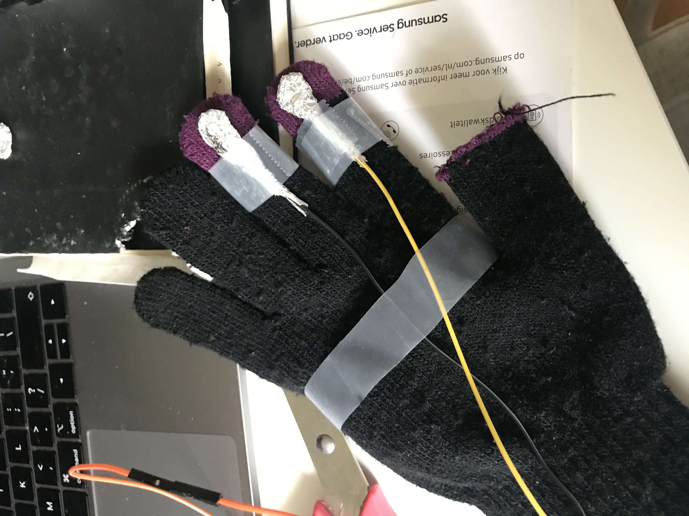
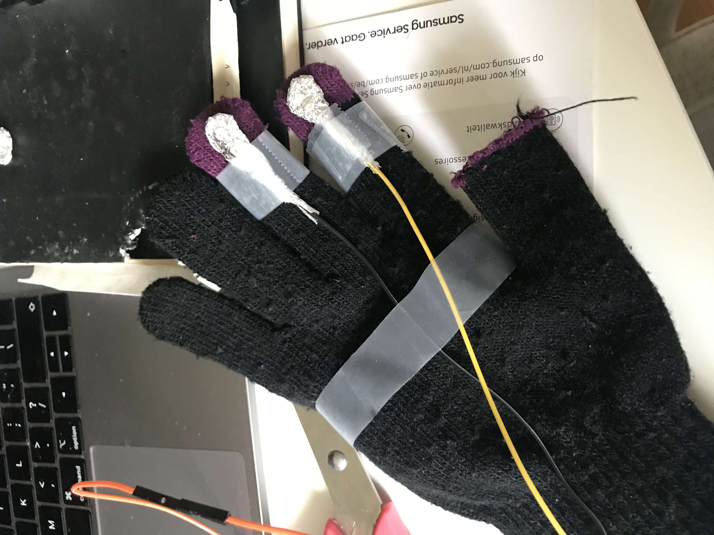
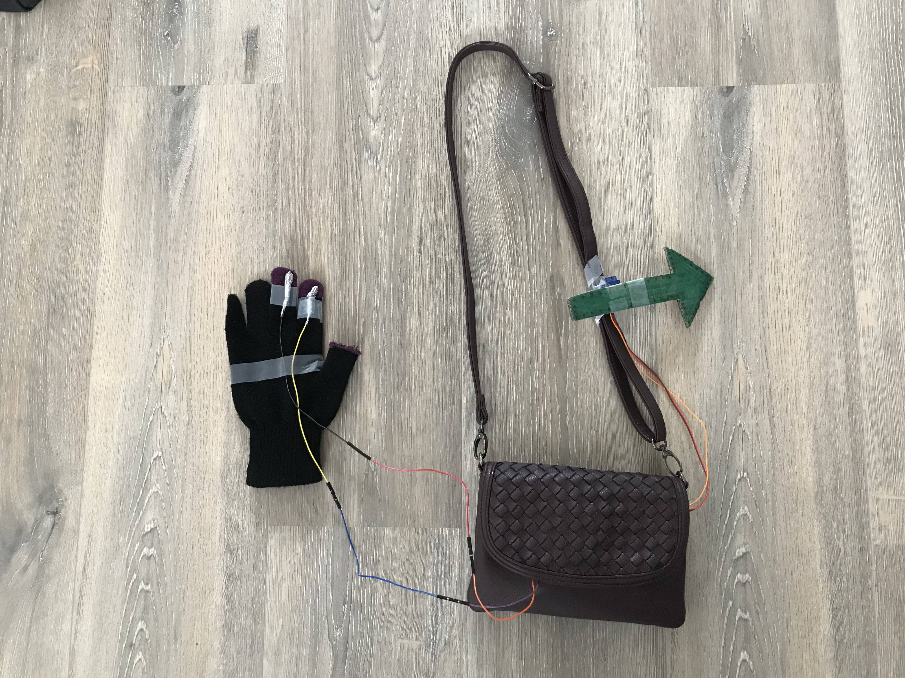
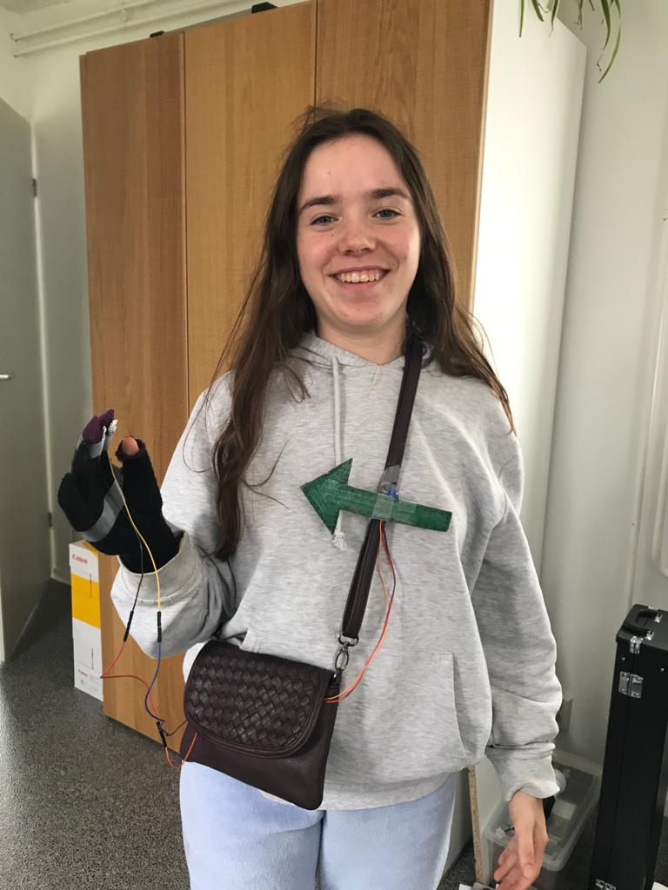
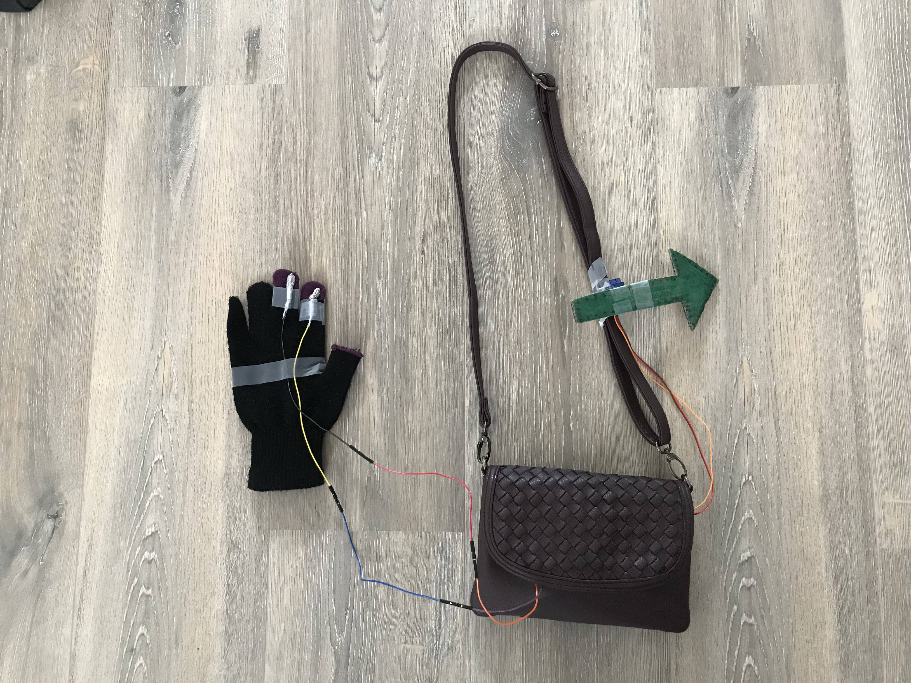
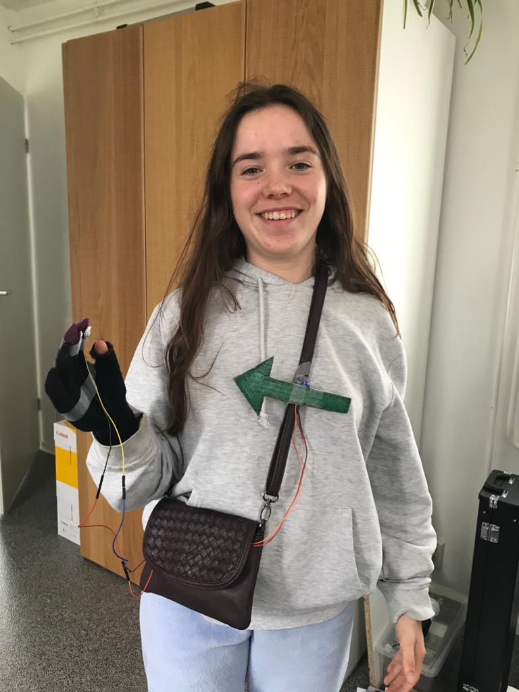
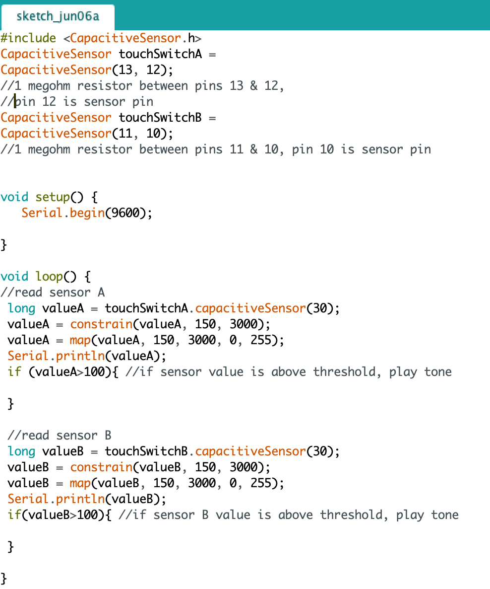

Challenge 4
Research
Voor de research was het de bedoeling om naar leuke, interessante en/of bijzondere AR/VR projecten te kijken. Hieronder staan 3 projecten die mij aanspreken.
High Top-ography
Het bedrijf Spacefillers heeft in samenwerking met Moo-Young Concept Shop een unieke interactieve schoenen platform gecreëerd voor hun sneakerlijn. De schoenen staan op een door projectie in kaart gebracht topografische gebergte (te zien in de afbeelding). Door de schoenen op of af het platform te halen, verandert het geprojecteerde landschap. Ik vind de projecties er heel gaaf en mooi uitzien. Ook vind ik het leuk, dat de projectie veranderd wanneer de schoen eraf gehaald wordt, wat zorgt voor extra interactie. Dit is zeker een indrukwekkende manier om je schoenenlijn te laten zien
Credits: Spacefillers
Website: https://spacefiller.space/mooyoung/
Maze Game
In dit project is een doolhofspel gemaakt door middel van Arduino. De maker heeft gebruik gemaakt van 2 servo motors en een joystick om de doolhof te besturen. Hiermee kan hij de doolhof naar links, rechts, vooruit en achteruit bewegen. Ik vind dit best een origineel idee, dat je dus met de joystick heel het doolhof kan bewegen om uiteindelijk het balletje bij de finish te krijgen. Ook vind ik het leuk dat het een project is waar ik de onderdelen en constructie van begrijp, en het ook wel mogelijk zou zijn dat ik het zelf in elkaar kan zetten.
Credits: The Wrench
Kanaal: https://www.youtube.com/channel/UC92-zm0B8vLq-mtJtSHnrJQ
Info: http://bit.ly/2Oqt5W8
Led cube
In dit project heeft Harry Le een led cube gemaakt met behulp van een arduino. Het is een kubus met allemaal ledjes, die samen een groot geheel vormen. De ledjes worden via de arduino bestuurd, en er kunnen dus allemaal coole effecten mee gedaan worden (te zien in de video). Hij heeft gebruik gemaakt van ijzerdraad om de ledjes in de kubusvorm te krijgen. De effecten die er mee mogelijk zijn vind ik supergaaf. Wat ik ook leuk vind is dat het redelijk simpele onderdelen zijn, maar er wel zoiets leuks mee gemaakt is. En ik vind het ook wel indrukwekkend hoeveel werk er in het project gestoken is.
Credits: Harry Le
Kanaal: https://www.youtube.com/channel/UCBr7j1WEcnkP6268xWNtqYQ
Website: https://github.com/VectStudio/LED_CUBE
Tinkering
Demo 1


Code


Show
Demo 2

Code

Show
Demo 3


Code

Show
Design and Build
Proces

 


 



Code


Voor de tweede challenge heb ik een richting aangever gemaakt. Voor verkeersregellaars is het natuurlijk de bedoeling dat zij makkelijk de richting aan kunnen geven op een kruispunt of een druk terrein. Met deze wearable wordt dit werk een stukje makkelijker en duidelijker. De verkeersregelaar draagt hierbij een pijl op zijn borst en kan de richting van de pijl besturen met 2 sensoren op zijn vingers (links of rechts). In mijn research heb ik ook het project ‘bike turning signal’ omschreven, dit ging ook over richting aangeven in het verkeer. Dit project vond ik erg cool, en met dit project in mijn achterhoofd heb ik mijn eigen wearable gemaakt.
Showcase
Reflect
Zelf vind ik wearables best wel cool en handig. Wearables kunnen het leven een stukje makkelijker en mooier maken en je helpen bij zoveel dingen. Ik denk dat er steeds meer wearables komen in de toekomst en dat het ook steeds normaler en toegankelijker wordt om een wearable te hebben. Ik denk ook dat de wearables steeds meer verwerkt wordt in bv. kleding of een bril, waardoor de wearable voor anderen niet eens zichtbaar is.
Ik ben heel blij en trots op het mijn uiteindelijke resultaat. Ik ben ook blij dat ik mijn idee helemaal goed heb kunnen uitwerken. Ik vond het nog best lastig om een idee te bedenken met de onderdelen die ik had, maar door inspiratie uit de research ben ik uiteindelijk toch op een tof idee gekomen. Het knutselen en in elkaar zetten ging best soepel, en het programmeren lukte ook goed. Ik had nog problemen met het vinden van een goed opbergtasje voor de arduino, breadboard en powerbank, maar uiteindelijk had ik er toch nog een gevonden.
Ik vond het erg leuk om met de arduino te werken. Het is erg leuk om zelf wat in elkaar te zetten en dat het dan ook nog werkt is supergaaf. In het begin vond ik het nog best moeilijk met de arduino, dit kwam ook omdat de eerste opdracht niet gelijk lukte, maar daarna verliep het erg gemakkelijk en ging ik er redelijk snel doorheen. Ik denk dat ik nog wel vaker dingen ga uitproberen met de arduino, want je kan er echt zoveel dingen mee doen.